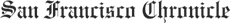

|

How an American family moved to Fiji and brought Hollywood along for the ride
By Edward Guthmann
On the Fijian island of Taveuni, there's a movie theater called the 180 Meridian Cinema. Tropical breezes pass through the large, open windows of the funky, 288-seat facility, and islanders can view a vast grid of stars while watching "Matrix Reloaded" or the latest action flick from local favorite Jean-Claude Van Damme.
It was there during a 2000 vacation that author and film producer John Pierson saw a Three Stooges short, "Some More of Samoa," and had an epiphany. As the islanders howled with laughter, screaming with a robust delight that was stunning in its fullness and purity, Pierson realized what he'd been missing in a business dominated by ruthless, profit-chasing cynics.
"I had never remotely heard anything like that," Pierson says in "Reel Paradise," a documentary, opening Friday at Bay Area theaters, about the year he spent in Taveuni. "This is somehow what I missed."
Since the mid-1980s, when he launched Spike Lee's career by selling and packaging "She's Gotta Have It" and doing the same for Michael Moore with "Roger & Me," Pierson's name has been synonymous with independent American film. He wrote "Spike, Mike, Slackers & Dykes," the definitive book on indie- film culture in the 1990s, and hosted "Split Screen," a magazine-format show on the Independent Film Channel.
But after 25 years in the business, Pierson needed escape. He dreamed of moving to Taveuni with his wife and business partner, Janet, and their teenagers, Georgia and Wyatt. He knew his Swiss Family Robinson fantasy was extreme: The teardrop-shaped island lacks electricity, paved roads, radio or TV; the heat, humidity and mosquitoes are overwhelming; and the Pierson kids would have to cold-turkey from instant messaging, PlayStation 2 and the other assorted distractions of consumer-crazed America.
"Quite unexpectedly," Pierson says, the family agreed. After raising cash from Lee, Kevin Smith, Matt Stone of "South Park" and other film-world buddies, Pierson bought the 180 Meridian Cinema -- he calls it "the world's most remote theater" -- and decided to show a year of free movies to islanders who average $20 a week in wages. The Piersons arrived in July 2002 for a one- year experiment, and during their last month were joined by documentary filmmaker Steve James ("Hoop Dreams") and a tiny camera crew.
"Even though it was only 27 days, it was the last 27 days, which meant a kind of countdown," Pierson, 51, said during a quick Bay Area visit with his wife and kids. "We had no idea how much s -- would happen, pretty much from the hour the film crew arrived."
During that last month, the Piersons' 125-year-old solar-generated plantation house was burglarized, and Janet's laptop, Palm Pilot and digital camera were stolen. The Fijian movie projectionist got drunk and didn't show up at the 180 Meridian; John came down with dengue fever, a mosquito-borne disease that makes victims feel as if their bones are breaking; and Georgia staged a teenage rebellion, cutting school and disappearing with an island boyfriend.
All of that's in the movie, and the Piersons are split about how accurately the movie portrays their South Pacific experience. "Anything that has to do with being filmed is going to be unbalanced, just 'cause it's changing the way things are," says Georgia, a spunky, outspoken 18-year-old who regrets that the movie shows the grief she gave her parents without balancing that material with positive stuff.
"I mean, obviously, I did all that stuff, so it's part of who I am. But it's a very small part of who I am. ... (Taveuni) was a really good experience, and so it's kind of just, like, distorting my memory to have this movie seen so many times."
Wyatt, 15, is more sanguine about "Reel Paradise" because, he says, "It makes me look really funny, which is good." Some of the best scenes show him mocking his dad's taste for indie films ("They're boring") and trashing the serious fare that John booked -- "Apocalypse Now" and "Gangs of New York" --
which bombed with the Taveuni locals.
The Piersons aren't your typical family. John and Janet give Georgia and Wyatt free rein to express themselves, and the couple laugh frequently at their kids' spirited opinions and frequently graphic humor. During the hour the family spent sitting at my kitchen table -- they'd just had breakfast at the Rockridge Cafe in Oakland -- it was a challenge to corral the Piersons' collective energy and keep them from all talking at once.
"I love the movie," says Janet, 48. "I sort of have this out-of-body experience watching it, where I think, 'That's a really nice portrait of a family and I appreciate how honest they are.' " On the other hand, she believes James imposed his "liberal guilt bias" on the film by taking a critical view of the Piersons' impact on the islanders, and also thinks her husband comes off badly.
Indeed, John seems to incarnate the stereotypically rude and pushy American when he blows up at his gone-to-seed Australian landlord and hectors movie patrons to behave at the 180 Meridian Cinema -- a theater that's been part of their lives for decades but under his stewardship for a matter of months.
"I'm a little loud for this culture," John says on camera.
"The film really works against him on that level," Janet says, "because John actually had a wonderful way with the Fijians. I mean, he's very much John: He wanted to get things done, and he's a perfectionist, which is very different in that culture. But he also has a relaxed side that wasn't caught."
Today, the Piersons live in Austin, Texas, where John teaches film at the University of Texas, Wyatt is enrolled in 10th grade and Georgia works at the local Dobie Theatre and plans to start culinary school next month. They think about Fiji frequently: about Georgia's friend Miriama and Wyatt's friend Tawake, about the ease and the pace of the island.
"I miss everything about Fiji," Wyatt says. During a "Reel Paradise" preview screening at the Lumiere, Wyatt passed a shoebox through the audience and raised $527 for Tawake's tuition at Taveuni's Catholic school.
"The thing about, like, being in America versus being in Fiji," Georgia adds, "is that there's way too much being thrown at you here. Like, you have to be doing something and entertaining yourself constantly to be having fun. I mean, in Fiji you just kind of, like, sit around. You're so content just doing absolutely nothing."
Janet smiles, proud of her daughter's forthrightness, and adds, "Georgia would just sit outside under a tree with this big smile on her face. She ended up reading for the first time in her life -- she's never been a reader -- and it was great because there weren't all the distractions of America. She finally was, like, 'Oh, I get this.' "
More Press...
|
 |
|
|